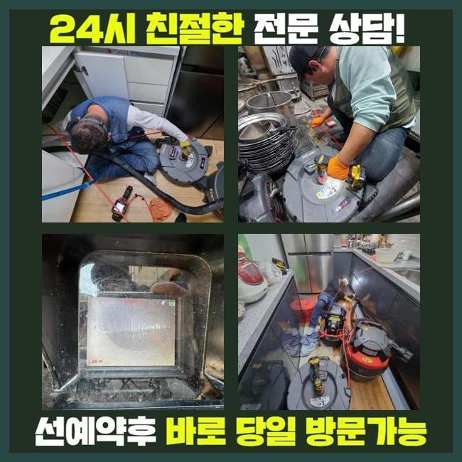
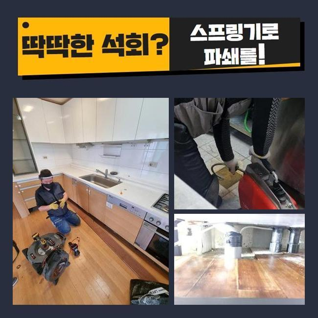
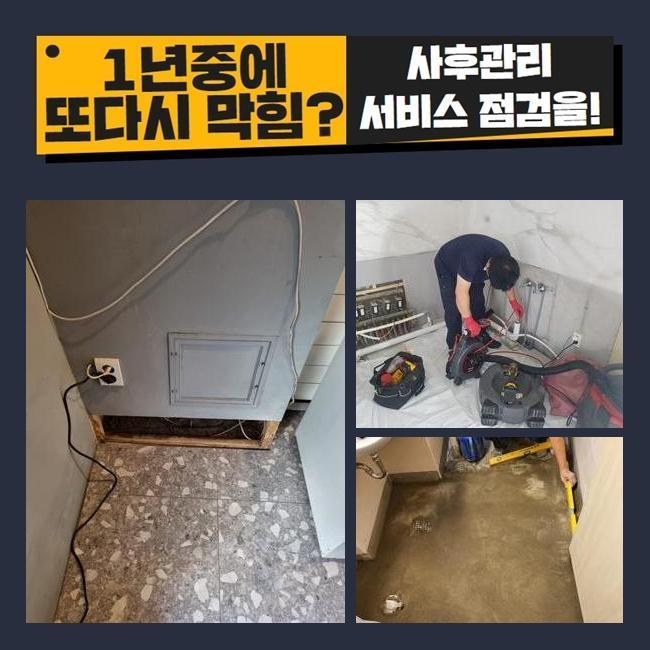
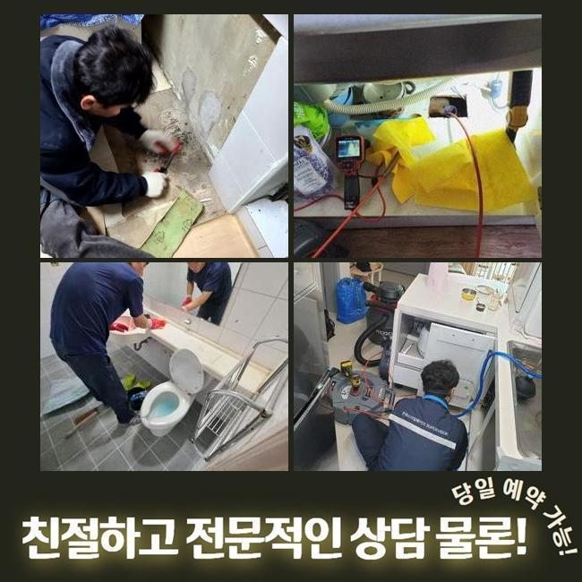
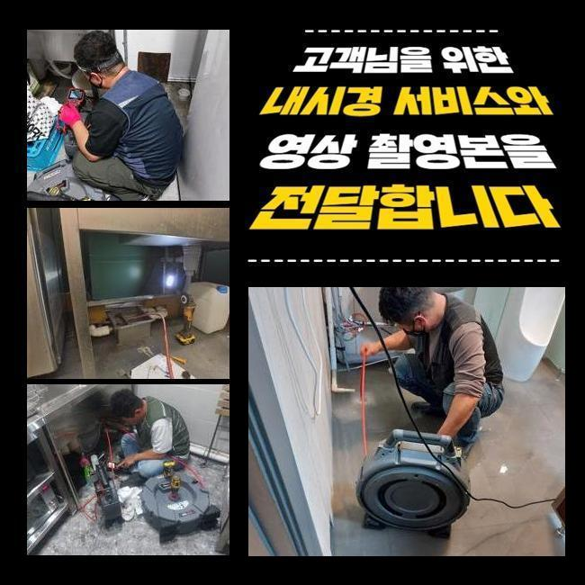
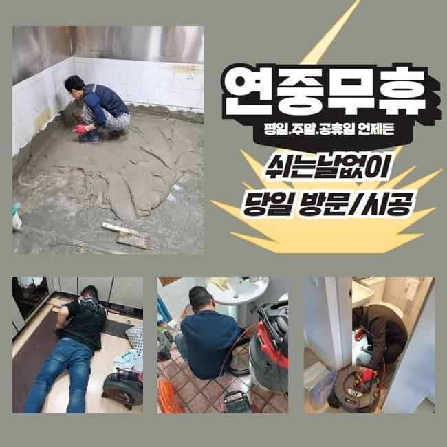
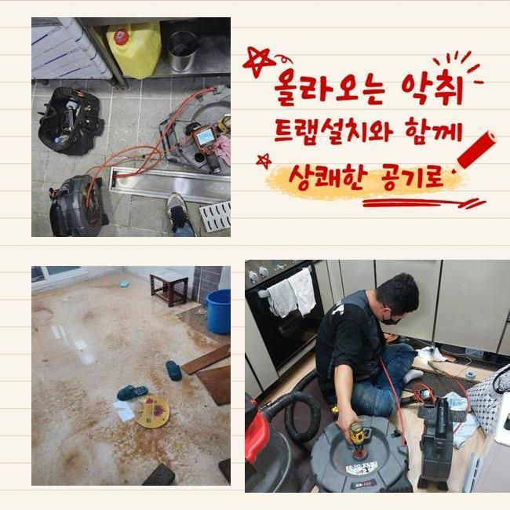

🏠 부천 성곡동화장실하수구막힘 신흥동 하수구뚫는업체 물샘전문업체
용인 싱크대막힘 전문 시공 후기

📋 작업 개요
- 위치: 용인
- 서비스 유형: 싱크대막힘, 하수구막힘, 배관막힘, 누수수리, 역류해결, 뚫는업체, 배관청소, 고압세척, 설비공사, 악취차단
- 작업 일시: 2025. 3. 21. 13:18
- 업체명: 하수구수사대 (010-5615-2118)
🔍 문제 상황
부천 성곡동화장실하수구막힘 신흥동 하수구뚫는업체 물샘전문업체
일상생활시 종종 나타나는 문제들이 있죠
그것중 한가지로 하수관막힘을 말씀드리고자 합니다
배관이 막혀버리면 고약한 냄새가 올라올뿐만 아니라 생활중의 불편을 증가시키죠
배수불가 사태로 인해 욕실사용을 하지못하고 역류마저 나타난다면 정말 난감해지겠죠
이번에는 쓰리룸빌라에서 생긴 세탁실배수 고장으로 여러 기기를 동원해 해결한 내용을 설명드리려 해요
의뢰인께선 주방시설 근처에 설비된 통돌이통돌이세탁기 배수관에서 물막힘이 일어났다며 저희쪽에 전화하셨는데요
작업차 안에 샤프트분쇄기와 배관카메라 등의 진단기기를 챙긴후 고객세대로 이동하였습니다
도착해 보니 고린내가 가득차 있었으며 이물질이 토출되어 있는 정황까지 목견할수 있었어요
세탁버튼을 눌러서 배수를 시켜보려고 노력했지만 외려 토출되는 사태가 나타났다 설명하셨죠
세탁한 성분만 방출되는게 아니었고 여러가지 오물들도 나오는 상황이었죠
일부의 시설에선 베란다와 싱크대의 하수관이 통하는 정황도 목격되는데요
그것에 관계된 부분도 확인하기로 했답니다
사태를 면밀하게 알아보려 의뢰인분에게 욕실부근이나 또다른 관로에 막힘이 일어났거나 역류증세는 없었는지를 확인해봤어요

🔎 원인 분석
💡 전문가 진단: 정밀 진단 장비를 사용하여 슬러지의 고착 여부를 판명하고 타격/세척 작업을 실시했습니다.
몇주 전쯤 물이 안내려가 인터넷에서 구매한 베이킹소다와 식초를 부어본적이 있다고 하셨죠
그걸 토대로 분석해본 결과 주방시설쪽의 하수관에 막힘상황의 동기가 있을거라고 여겨졌어요
저희측이 내방드린 현장의 트러블을 해소하기 위하여 동기를 파악하기로 합니다
내시경기기를 투입시켜 정체가 생긴 배수관을 검정하기로 결단하였어요
배수공이 차단되어 내시경마저 안들어갈땐 방수성능이 있는 고속청소기로 배수관의 노폐물을 처치합니다
이러한 과정으로 작업시간을 줄여나갈 수 있죠
세척공정 중에 상당량의 폐수와 고형물들이 방출되었답니다
그렇지만 이것만 가지고서는 근본적인 물막힘 사유가 어떠한 것인지에 대해 간파해내지는 못했어요
단순하게 석션으로 소제할수 없는것들이 상당하였기에 즉시 배관내시경을 투입시켜 물막힘이 생겨난 관로를 관측하기로 했습니다
이물들을 면밀히 들어다보니 해변에 존재하는 모래알갱이들이었어요
세탁과정에서 누출된 상황일 여지가 높았어요
의뢰자께 휴가일정이 근래에 있으셨나 물어보았더니 뻘이 많은 바닷가에서 캠핑을 하셨다고 말씀하셨죠
우선 눈에보이는 이물질을 제거하였고 좀더 실질적으로 세척작업을 실행합니다
그러면서 하단부위까지 소제가능한 기기들을 접목해보기로 했답니다

🔧 작업 과정
내시경카메라를 사용하는 건 막힘의 사유를 세세하게 조사하고 정체를 처리하기 위함입니다
석션장비로 소제를 이행하고 가느스름한 호스줄에 붙어있는 내시경cctv를 이용하여 하수구 하단부를 진단해 보았습니다
배관 곳곳을 확인했고 근본적인 트러블의 사유를 발견해낼수 있던거죠
보는바와 같이 관로막힘은 여러가지 변인들에 기인하여 생길수 있으며 해결책이 간단한것도 아니죠
그렇기때문에 전문적인 장비들을 토대로 시공을 해나가야 원만하게 끝맺음할수 있는거랍니다
혹여 대강 사태를 정리하려든다면 한층더 정체가 증대되기 쉽다는걸 기억해주시길 당부드려요
배수관 군데군데를 배관카메라로 확인해보고 있어요
관의 기장은 예상한것 보다 크고 형태도 복잡해서 직시해서 검증하기에는 한계점이 있답니다
그럴때 작은 내시경기기가 큰 임무를 할수가 있답니다
내시경배관카메라로 하수관 안을 천천히 들여다보니 다양한 노폐물들과 자그마한 알갱이들이 혼재되어 있었어요
이 슬러지들은 적체되기 쉬우며 단단하게 고착화되기 쉽습니다
미세한 잔재들은 배수관을 통해 쉬이 오수탱크로 이동하겠지만 동시에 모래알들이 관로로 투입된다면 이곳처럼 정체가 일어날수 있죠
거기에 더해 사태가 지속되면 단단한 이물질층이 생겨날수도 있는거고요
슬러지의 성격에따라 이용하는 도구가 다릅니다
일례로 양말같은 넓적한 이물들이 누적되었다면 고리를 이용하여 끄집어낸 뒤에 흡입장비로 배수관 내측을 청소해야 됩니다
만약 이를 간과해버리고 곧바로 분쇄공정에 들어가면 하수관 내측이 한층더 혼잡해질수가 있는거죠
찌꺼기들이 뭉텅이처럼 많이 모여있다면 그것을 쪼개주는 분쇄공정을 시행하곤 하죠
이장소는 돌맹이들과 엉켜있었기 때문에 샤프트장비를 동원하여 소제한다음에 뚫어보기로 하였습니다
금번 장소에서는 전 찌꺼기들을 세척하고 내시경장비로 다시금 점검을 하였어요
그리고 제거안된건 샤프트기기로 정결히 정비하고 곧바로 통수관련 검사를 실시했는데요
다량의 물도 시원하게 흘러내려가는걸 확인하였습니다
작업중에 발생한 잔재들을 전부다 정리하여서 분리폐기하는걸로 공사를 마무리하였죠


✅ 작업 완료
이러한 막힘증세를 차단하려면 정기적으로 하수구 진단해보았고 클리닝해야 돼요
주방과 연결된 관로에서는 기름슬러지가 중앙에 정체하여 역류를 일으킬때가 많아요
그럴땐 지체하지말고 즉각적으로 전문가를 찾아보시는게 바람직합니다
자체적으로 처리할수있는 방안은 본질적인 해결에 다가서기 어렵고 막힘상황이 한층 심화되는 정황도 빈번하기 때문이죠
배관전문가의 세척공정은 간단하게 삶을 정상적으로 만들어주는것 뿐만아니라 청결성을 지속시키는데도 필수입니다
또 그문제가 지속해서 방치되버리면 주변 이웃들에게도 악영향을 가할수 있단걸 알아두시길 부탁드립니다




⚠️ 베란다 누수 및 방수 관리 방법
- ✅ 비가 많이 올 때 창틀 주변이나 아래층 천장에 얼룩이 생기는지 정기적으로 확인해 보세요.
- ✅ 우수관 주변 실리콘 마감이 들뜨거나 깨진 틈새가 있는지 손상 여부를 수시로 체크하세요.
- ✅ 베란다 바닥 타일의 줄눈(메지)이 소실되면 그 틈으로 물이 침투하여 누수가 유발됩니다.
- ✅ 누수 의심 증상 발견 시 방치하면 아래층 손실이 커지므로 즉시 전문가의 진단을 받으십시오.
💡 핵심 정리
- 확실한 장비 작업(내시경 점검 및 샤프트 스케일링)으로 원인을 뿌리 뽑습니다.
- 작업 후 1년 이내에 동일한 부위 재발 시 100% 무상 A/S 서비스를 보장합니다.
- 서울 · 경기 · 인천 전 지역에 24시간 언제든 긴급 출동할 수 있도록 항시 대기 중입니다.
❓ 자주 묻는 질문 (FAQ)
🚨 용인 싱크대막힘 문제로 고민이신가요?
정확한 원인 진단과 확실한 시공으로 재발 없는 해결을 약속드립니다.
24시간 긴급 출동 | 서울 · 경기 · 인천 전지역 | 1년 내 재발 시 무상 A/S